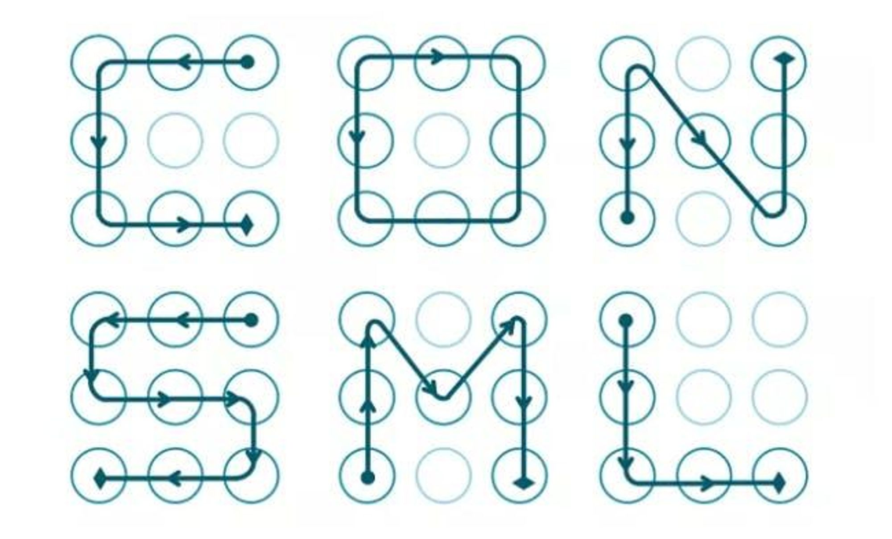
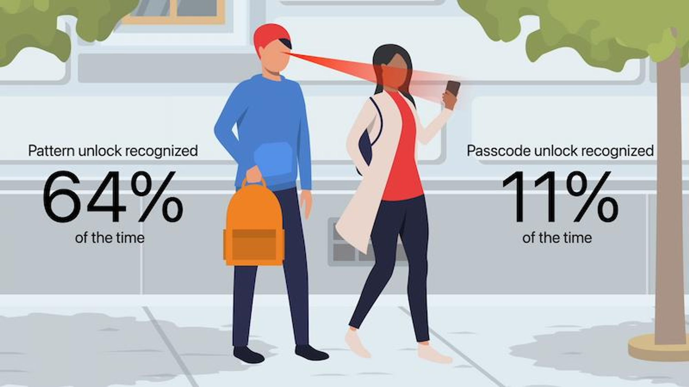

儘管 iPhone 已經有 Face ID 臉部辨識和 Touch ID 指紋辨識功能，如果辨識失敗就會需要改用4位或6位數字密碼才能解鎖，還是有不少人好奇，蘋果為何不加入 iPhone 九宮格解鎖（圖形解鎖）功能會比較方便？這功能在 Android 設備經常看見，不少 Android 用戶也認為圖形解鎖比數字密碼更好用又安全。
為什麼iPhone遲遲不加入九宮格解鎖功能，這篇就來分享蘋果為何從來不考慮採用 iPhone 圖形解鎖背後真實原因。
為什麼 iPhone 沒有九宮格解鎖？{kind=link}
iPhone 圖形解鎖永遠不會出先原因是為了安全
其實蘋果不願意替 iPhone 解鎖功能推出「九宮格解鎖」或「圖形解鎖」，最主要原因就是安全。
挪威科技大學研究員 Marte Loge 發現 Android 九宮格解鎖相比密碼解鎖更不安全，大多數使用者都習慣設定 4 到 5 個節點，而且高達 77% 解鎖圖形都會從左至右或是上到下順序滑動，造成很容易被猜出來，才會造成九宮格解鎖安全度不足。
 手機九宮格解鎖公眾測試
美國海軍學院和馬里蘭大學巴爾研究人員招募 91 名民眾進行測試，驗證圖形解鎖和密碼解鎖誰比較安全？最終結果顯示，要取得 Android 九宮格解鎖相當容易，只要利用「肩窺」（shoulder surfing）就能輕鬆取得，方法是站在對方身後，監視對方手指解鎖滑動方向，只要監視者看過一次有 64% 成功機率能紀錄下來，要是多看幾次成功率就會提升到80%。
反而 6 位數密碼解鎖，要透過肩窺方式取得，成功機率只有 10% 能夠在短時間辨識和記憶，從實驗結果證實，使用 6 位數字解鎖密碼相比圖形解鎖更安全。
 肩窺測試結果結論
連安全工程領域的研究人員兼任劍橋大學安全工程教授 Ross Anderson 也表示，對於不是安全專家的用戶而言，使用密碼安全度相對會更好。
主要是因為再透過手機點選密碼時，很難看清楚和短時間紀錄下對方點選的數字，反而九宮格圖形解鎖就很容易，滑過的線條還會顯示在手機畫面上，導致更容易被旁邊的人窺視和取得。
由於九宮格圖形解鎖相比解鎖密碼安全性更低，才會導致蘋果不願替 iPhone 加入圖形解鎖功能，畢竟對於蘋果來說，他們追求簡單、實用、安全與更新的解鎖技術，儘管九宮格圖形解鎖看起來很簡單，但是該技術並不安全，才會導致 iPhone 從最初 iOS 到新款版本都不會加入圖形解鎖功能。
本文轉載自 瘋先生 · @Johnolin10